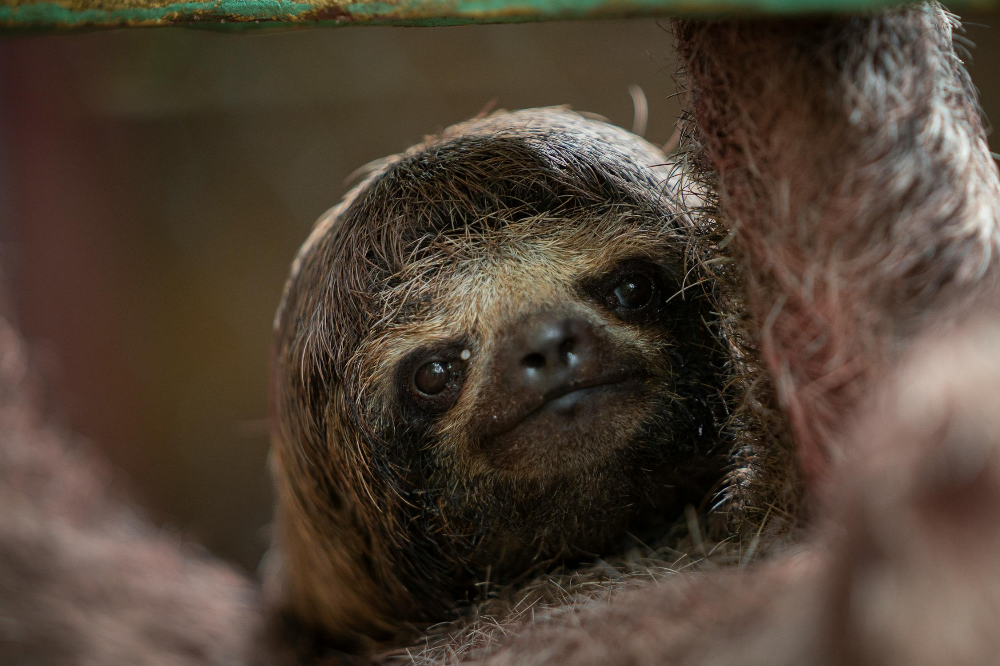
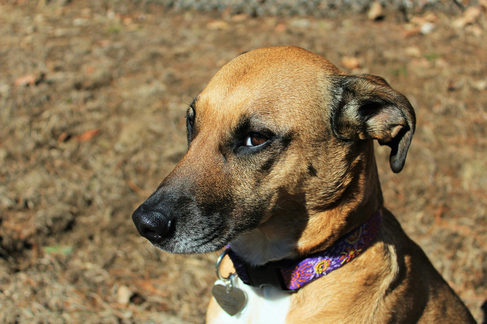

This website has some subtext that goes here under the main title. It's a similar font and the color is lower contrast.

Some random information
This is some subtext under am image
This is some subtext under am image
This is some subtext under am image

This is some subtext under am image
“A sharp distinction between humans and ‘animals’ is essential if we are to bend them to our will, make them work for us, wear them, eat them — without any disquieting tinges of guilt or regret. It is unseemly of us, who often behave so unfeelingly toward other animals, to contend that only humans can suffer. The behavior of other animals renders such pretensions specious. They are just too much like us.”
– Carl Sagan
Call to action! It's time!
Sign up for our product by clicking that button right over there!